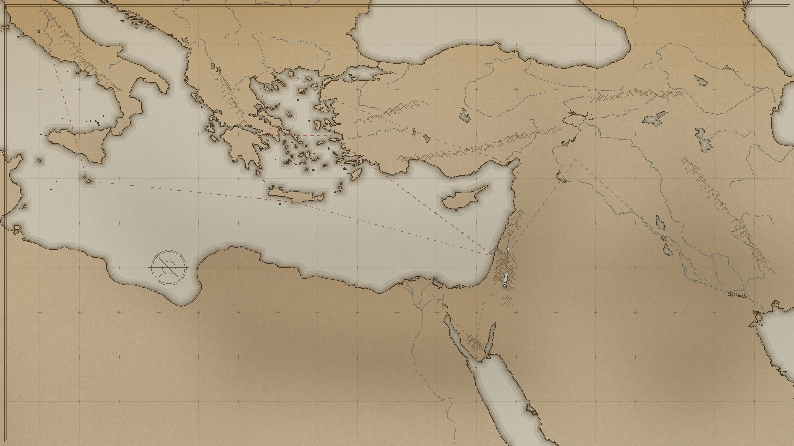

전체 문헌을 표시하고 있습니다.
💡 카드를 클릭하시면 전용 전자책 리더 & 성화·도판 뷰어로 전문(Full Text)을 읽고 A4 유인물로 인쇄하실 수 있습니다.
성경 속 지도 이야기 · 인물 역사서 · 고고학 복원 도감 · 등잔 밑 사물 백과 · 새벽 우물 아카이브
실제 측량 해안선·수계 지도를 확대·축소하며 탐험해 보세요. 성경 이야기가 많이 일어난 도시일수록 점(원)이 커지며, 점을 클릭하면 우측에 그 도시의 모든 문헌 뷰가 떠오릅니다.

꿈바온 디지털 도서관은 흘러가는 영상 너머에 있는 성경의 땅과 사람, 사물의 역사와 매일의 말씀 풀어읽기를 한 권의 책처럼 차곡차곡 기록하고 나누는 성경 아카이브입니다.
@dreaming_ondal)에 수록된 조금 긴 성경이야기·매일묵상·소소한 성경이야기·찬양 영상 118편을 한눈에 둘러보고 클릭 한 번으로 바로 감상하는 영상 상영관.🎬 꿈디도 영상실 또는 제5관 탭을 누른 뒤 영상 카드를 클릭하시면 유튜브 원본 화면으로 즉시 연결됩니다.🖨️ A4 유인물 인쇄 또는 📋 원고 전문 복사 버튼을 누르시면 개인 묵상 노트나 성경공부 자료로 깔끔하게 출력하실 수 있습니다.